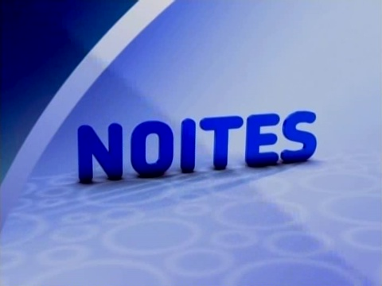

Humor

- 
No princípio do Viva, humor era coisa muito séria! Em espaços de destaque na grade, os programas voltados ao riso eram um dos pilares da programação do horário nobre. Tudo começou com uma família muito conhecida lá do Largo do Arouche, carro-chefe da programação naqueles meses de outono e inverno de 2010; acomapnhada, aos finais de semana, de autores como João Falcão e Luis Fernando Veríssimo, além do mestre Chico Anysio. Biscoito fino!
A partir de outubro de 2010, a semana passava mais rápido com uma atração diferente a cada dia da semana, sempre precedida de uma turma nota 10 em matéria de comédia, na Escolinha do Professor Raimundo. No fim daquele ano, o bloco, exibido às 21h de segunda-feira a sexta-feira, ganhou até vinheta própria, batizado de Viva Rindo.
Viva Rindo abrigou diversas novidades no Viva - e, vale ressaltar: várias delas estão documentadas na página destinada a séries e seriados - para além dos dias "úteis", visto que seus horários alternativos recheavam o final de semana do canal. Em abril de 2013, o bloco também ganhou uma rodada à tarde, em meia hora, antecedendo a sequência de novelas vespertinas.
Em breve, nesta página: Escolinha do Professor Raimundo; Garotas do Programa; Vida ao Vivo Show; TV Pirata; Viva o Gordo; Brasil Legal; Casseta & Planeta, Urgente!; Muvuca; O Belo e as Feras; Sai de Baixo Especial.